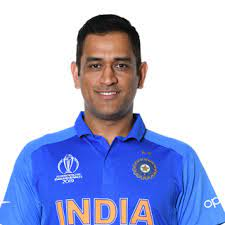
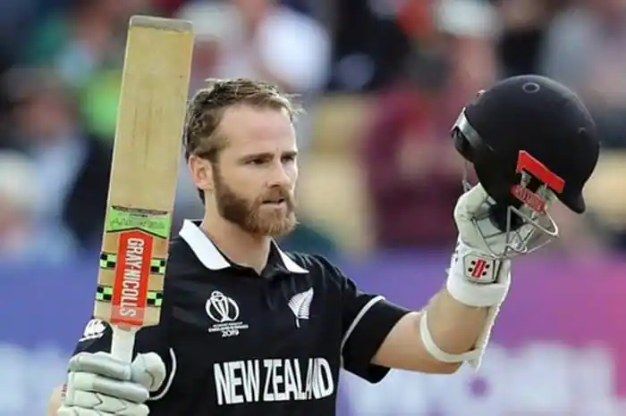

Cricket is a bat-and-ball game played between two teams of eleven players on a field at the centre of which is a 22-yard (20-metre) pitch with a wicket at each end, each comprising two bails balanced on three stumps. The batting side scores runs by striking the ball bowled at one of the wickets with the bat and then running between the wickets, while the bowling and fielding side tries to prevent this (by preventing the ball from leaving the field, and getting the ball to either wicket) and dismiss each batter (so they are "out"). Means of dismissal include being bowled, when the ball hits the stumps and dislodges the bails, and by the fielding side either catching the ball after it is hit by the bat, but before it hits the ground, or hitting a wicket with the ball before a batter can cross the crease in front of the wicket. When ten batters have been dismissed, the innings ends and the teams swap roles. The game is adjudicated by two umpires, aided by a third umpire and match referee in international matches. They communicate with two off-field scorers who record the match's statistical information.
Forms of cricket range from Twenty20, with each team batting for a single innings of 20 overs (each "over" being a set of 6 fair opportunities for the batting team to score) and the game generally lasting three hours, to Test matches played over five days. Traditionally cricketers play in all-white kit, but in limited overs cricket they wear club or team colours. In addition to the basic kit, some players wear protective gear to prevent injury caused by the ball, which is a hard, solid spheroid made of compressed leather with a slightly raised sewn seam enclosing a cork core layered with tightly wound string.
The earliest reference to cricket is in South East England in the mid-16th century. It spread globally with the expansion of the British Empire, with the first international matches in the second half of the 19th century. The game's governing body is the International Cricket Council (ICC), which has over 100 members, twelve of which are full members who play Test matches. The game's rules, the Laws of Cricket, are maintained by Marylebone Cricket Club (MCC) in London. The sport is followed primarily in South Asia, Australasia, the United Kingdom, Southern Africa and the West Indies.
Women's cricket, which is organised and played separately, has also achieved international standard. The most successful side playing international cricket is Australia, which has won seven One Day International trophies, including five World Cups, more than any other country and has been the top-rated Test side more than any other country.
The cricket pitch length is 22 yards, approximately 20.12 meters, or 66 feet in length. The width of a cricket pitch is 10 feet or 3.05 meters, and it measures the distance between each wicket from either end of the field. It must be 8 feet, 8 inches long (2.64 meters). The popping crease, or rear edge of the crease maker, must be 4 feet (1.22 meters) in front and parallel to the bowling crease. A grass pitch must have at least 1.22 meters behind the stumps to allow the return crease and bowler's approach area, making the total length 20.12 (from stump to stump). A turf pitch width of 3.05 meters. An ideal turf pitch will be 20.12 metres long (without the return crease and bowler's approach area), plus 1.22 metres behind the stumps (for the return crease and bowler's approach). The stumps are spaced 20 meters apart in the middle, and a wicket line is aligned with them at each end, measuring 1.83 meters for the batting end and 2.47 meters for the bowling end.
The game has several benefits, some of which have been mentioned below as:
Virat is an Indian professional cricketer and currently the captain of the national cricket team India. He is a right-handed top-order batsman in the game. he is a part of the IPL team Royal Challengers Bangalore from 2008.
He is the holder of national awards in India like the Arjuna Award (2013), Padma Shri, India’s fourth-highest civilian award (2017), Rajiv Gandhi Khel Ratna- 2018.
The other sporting awards are the Sir Garfield Sobers Trophy, ICC ODI Player of the Year: 2012, 2017, 2018; ICC Test Player of the Year: 2018; Wisden Leading Cricketer in the World: 2016, 2017, 2018, CEAT International Cricketer of the Year: 2011-12, 2013-14, 2018-19; and many more awards to his name.

MS Dhoni is an international cricket player from India where he is a former captain of the India cricket team. His role in the game is of the Wicket-keeper batsman where he is a right-arm medium bowler and right-handed batsman.
He is a part of various domestic teams Bihar Cricket Team, Jharkhand, Chennai Super Kings, Rising Pune Supergiant. he has various national awards from the government of India a few to name are here.
Padma Shri (2009), Padma Bhushan (2018), Rajiv Gandhi Khel Ratna (2007-08) are the national honors to his name. The other honors and awards are MTV Youth Icon of the Year (2006), LG People’s Choice Awards (2013), CNN-News18 Indian of the Year(2011).

Kane Williamson is a professional New Zealand cricket player and also the captain of the national cricket team for New Zealand. He plays the role of a batsman in the team where he is a right-arm off-break bowler and right-handed batsman.
He is currently a part of the domestic team Barbados Tridents, Sunrisers Hyderabad, Northern Districts.